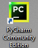
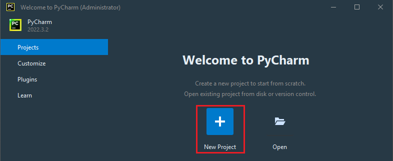
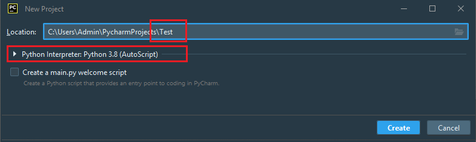
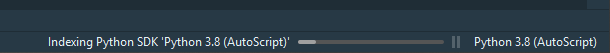
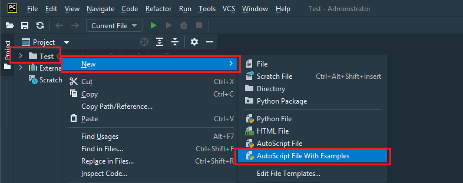
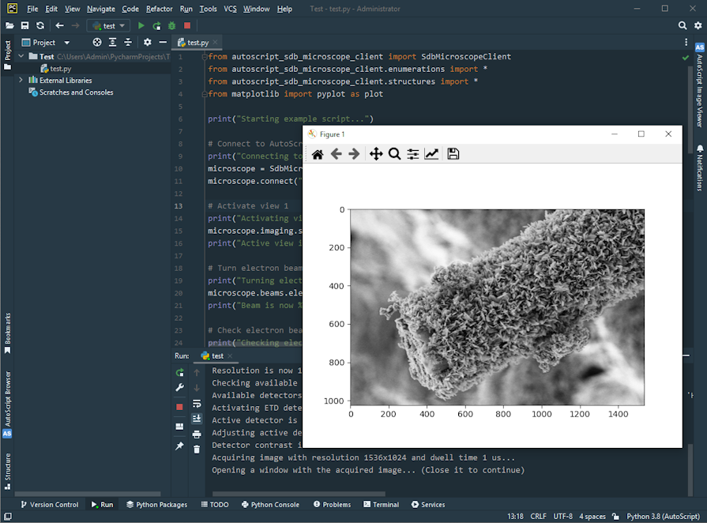

- The vacuum system and electron beam gun are in an operational state.
- Stage is homed and specimen is in position suitable for imaging.





When creating the first project in PyCharm with the specific interpreter settings, it scans Python packages installed with that interpreter. This process is called indexing. During indexing, the editor's functionality is limited, and scripts cannot be executed.

microscope.connect()
microscope.connect("localhost")

Example script finished successfully" appears in the output panel.